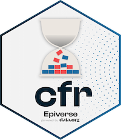

Tools for reading data
Open data for Colombia

Tools for cleaning data
Tagging and validating individual data
Tools for epidemiological parameters
Pipelines for common tasks

Severity estimation
Estimate force of infection from serology
Tools for vector-borne infections
Simulate vector-borne outbreaks
Calculate epidemic final size
Simulate epidemic dynamics
Explore epidemic scenarios